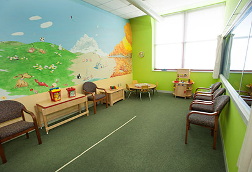
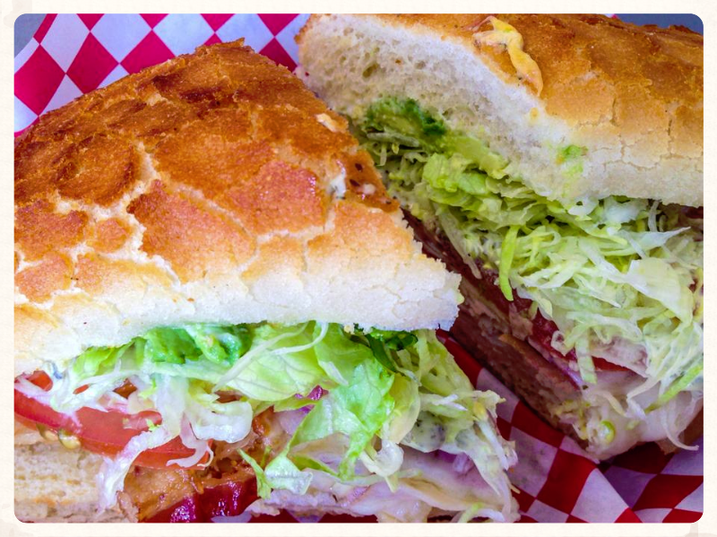
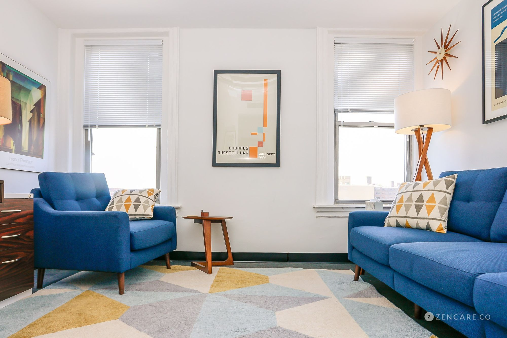
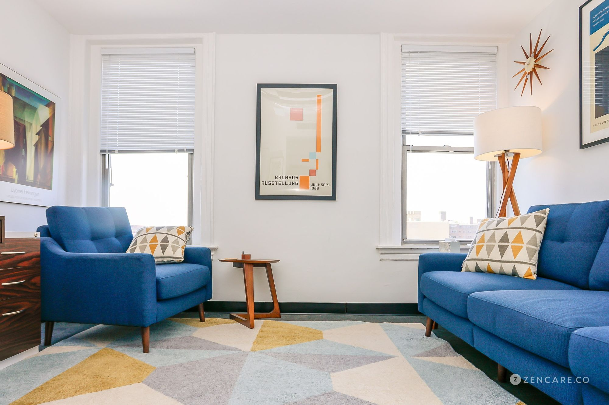
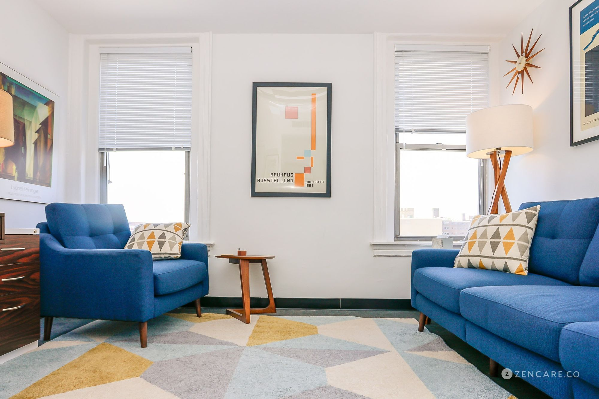

Elson Liang
I am currently a psychology major attending UCR as a 4th year. I am currently working at a youth health center where I attend and do office work for the therapists and psychologist. This job allows me to work in the field of psychology along gaining a lot of experience for the future. What I do in this job is observe the psychologists at work in order to understand how they run and handle children with mental health disorders. I've worked with patients with depression and other mental health issues. It is also a lot of fun as well. Working with children to understand them better and truly get a better understanding of what I want to do in the future. It's very similar to what I want to do in the future. This job allowed me to really learn more about myself as well as it provided me with plenty of oppurtunities to grow as a person and as a future therapist/psychologist. Thats why I believe this experience that I've had at this job will really help me out in the future.
Another position that I believe will help me is having lab experience. I've worked in a lab that studied the minds of mouses and how well their cognitive ability were when put in stressful scenarios where it was difficult for them to escape areas such as mazes. This allowed me to learn a lot about the mind of other beings besides human. It especially gave me a very in depth guide on how similar humans and other beings are. It gave me a very different perspective that I probably would not have seen compared to if I had no worked in the lab. I thought the mouse were very interesting and very adaptable in the situations that they were put under. Different types of mazes that varied from different tasks. I found this experience especially useful as it helped me learn more about lab positions as a psychology major and how it differentiated from other roles and jobs. What I especially liked about this job is that it gave me experience in studying labwork and patients and it really helped me understand my role as what I should be doing as a psychologist. I felt this experience helped me a lot in learning what my job and role was.
One of the most vital experience I believe that has really shaped me into the person that I have become is working as a assitant therapist. It was similar to my first job, but this one really allowed me to learn more about what psychologist do and what I wanted to do. What I did as a assitant therapy was of course I helped organize papers but I was also allowed to work with patients and talk with them. It helped me gain people skill as long as personal skills and experience that allowed me to Learn about what I had to personally work on as a person for myself and for my future.
Experience
Psychologist
• Lab Assistant at researcher for Mouse cognitive abilities
• Therapist Assistant at MHS instituion for children
• Mental Health worker at children facility
Lab Assistant
• Lab work
• Cleaning Cages and Organizational work
• On hand Experience working with animals
• Studies over 1000 hours of subjects
Education
UC Riverside
University of California Riverside
Portfolio


 

